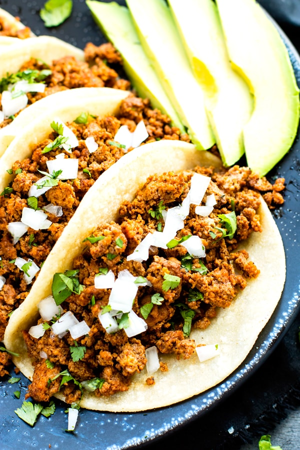

Ground Turkey Tacos

Lean mean hungry machine.
Hello everyone we are going to be
doing ground turkey tacos. These Tacos
are guarantee to give you the protein you need
and the lean meat provides more healthy options for you
Ingredients
- Soft Tacos
- Ground Turkey
- Pico de gallo
- lettuce
- cheese
- Onion
- taco seasoning
- Preheat a skillet to medium-high and let sit
- Place ground turkey in a bowl and add your seasoning
- Begin placing turkey meat on pan. While it is heating Start
chopping so it can have it's own chunks.
- Meat is ready once turned brown.
- place meat to the side and heat up soft tacos till golden brown
- begin plating tacos and place ground turkey on tacos with
lettuce cheese and pico de gallo.
- Serve to yourself or guest.